Overview
In this project, I have the opportunity to learn and fully implement how to render images on a screen. Apart from the basics of how to rasterize a point, a line and a triangle, I also implemented various advanced methods of samplings which greatly suppressed unwanted visual effects and improved the quality of the rasterization.
What I found interesting is that images, smallest color unit being a pixel, can be rendered as if it is construed with units smaller than pixels. For example, in supersampling, a point is divided into 1, 4, 9, 16 etc. “sub-pixels” and visited accordingly, it is as if a higher resolution version of the image getting downsampled by a box filter. Bilinear sampling also attempts to enhance the “depth” of each pixel color to imitate an effect of a downsampled higher resolution image. All these techniques effectively reduces anti-aliasing and beautifully presents better looking images.
Section I: Rasterization
Part 1: Rasterizing single-color triangles
In task 1, I implemented the method for rasterizing triangles. My approach is to first construct a bounding box for each triangle: find the minimum and the maximum values of x, y coordinates of the vertices, and only loop through the coordinates inside the box. While looping through each pixel within the box, I wrote a helper function that, given the input of a point (x, y) and the coordinates of three triangle vertices, determines whether or not the point is located within the triangle.
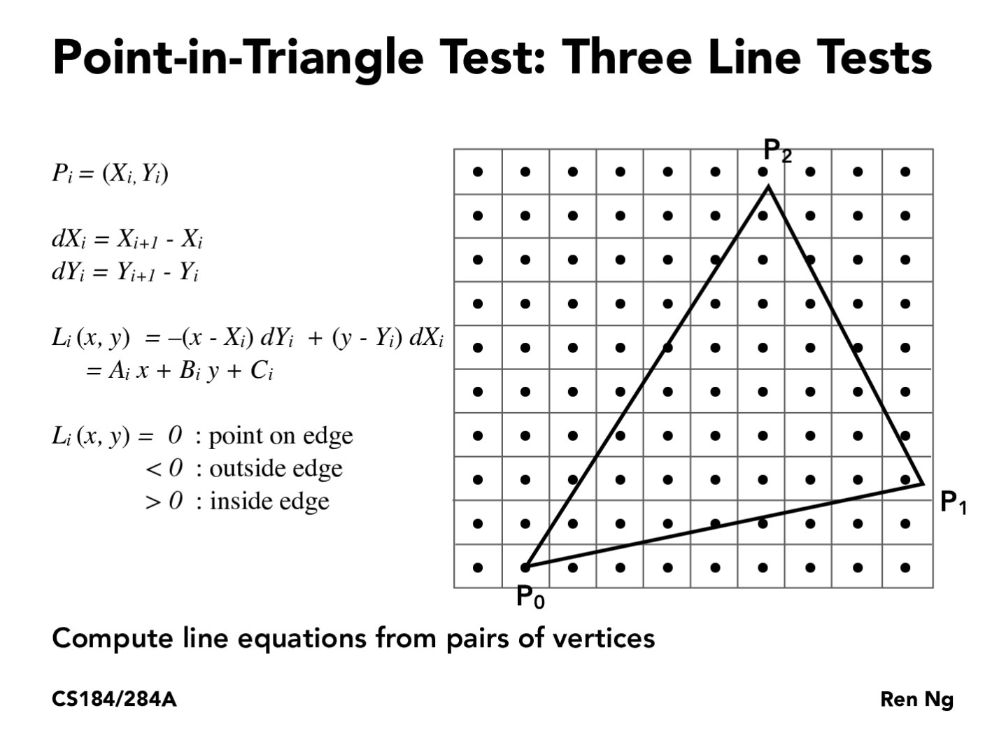The algorithm for my insideTriangle() helper function is the one elaborated in lecture: if a point P is above / on the line that spans from P0 to P1, the dot product of the vector P0 to P with P0 to P1’s (-dy, dx) line normal vector is >= zero. For the case where vector P0 to P is towards positive x directions, it being above the line means P is inside the triangle; for the case where it points to negative x directions, P is inside the triangle when below the line. Luckily, in either cases (counterclockwise winding orders), the equation evaluates to an output >= zero when the point is inside the triangle. Therefore for counterclockwise winding orders, we determine that a point is inside the triangle when the dot product is >= zero for all three edge. For clockwise winding order, we determine that a point is inside the triangle when the dot product is <= zero for all three edge.
|
|
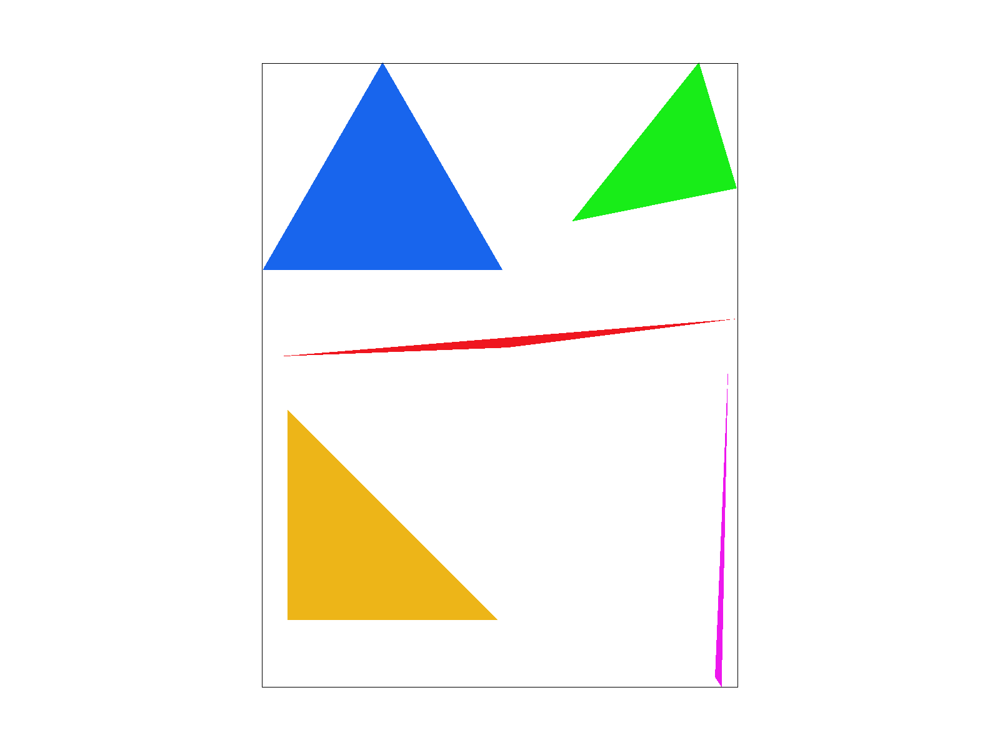
|
|
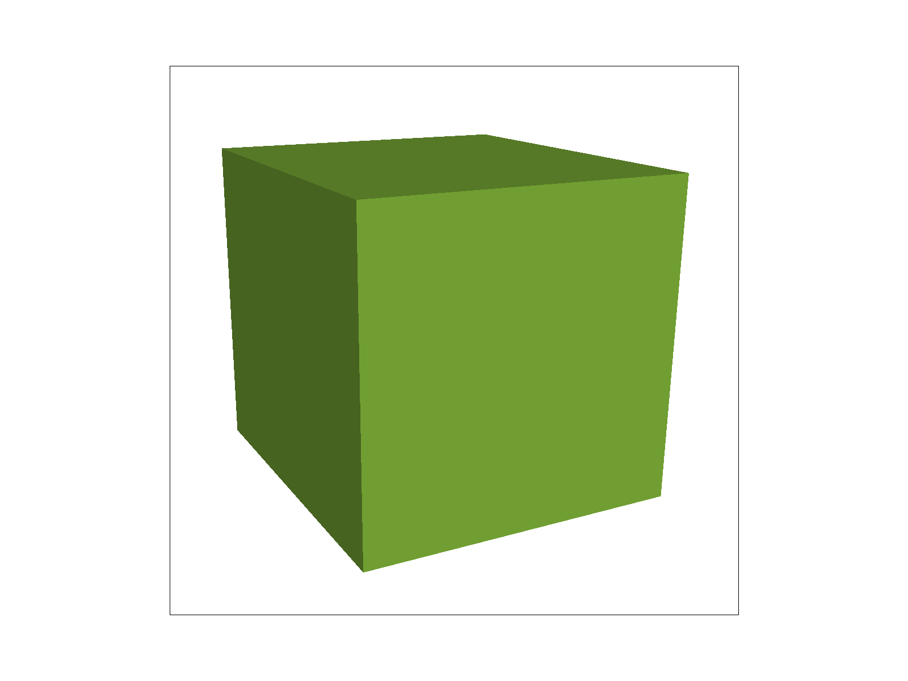
|
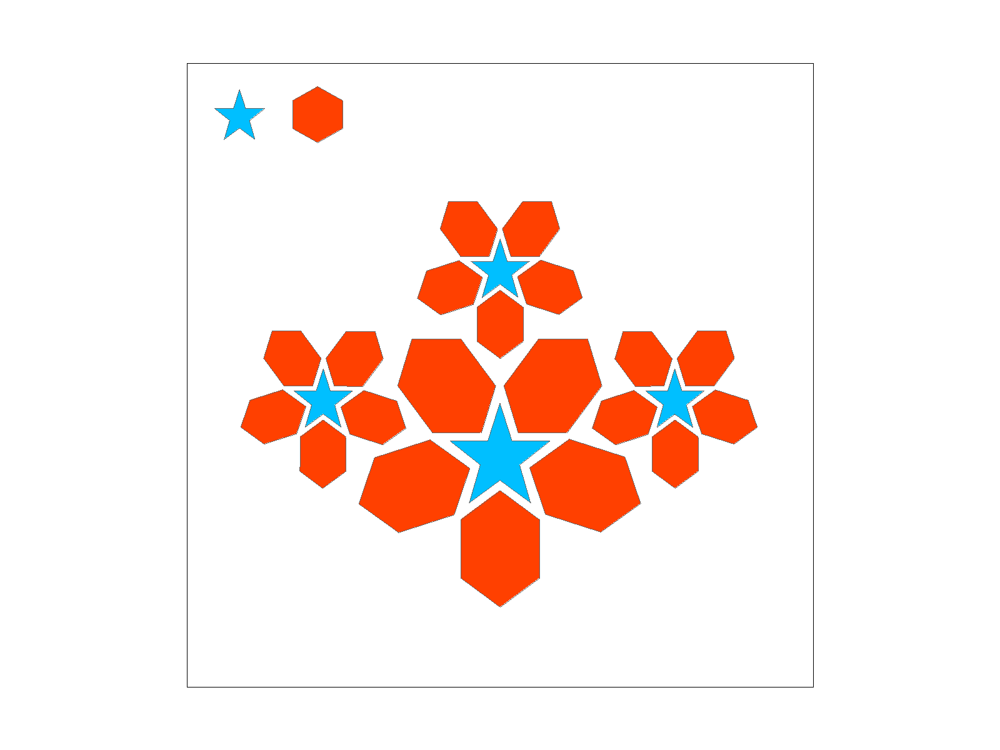
|
In particular, I captured two interesting details of test4.svg.
|
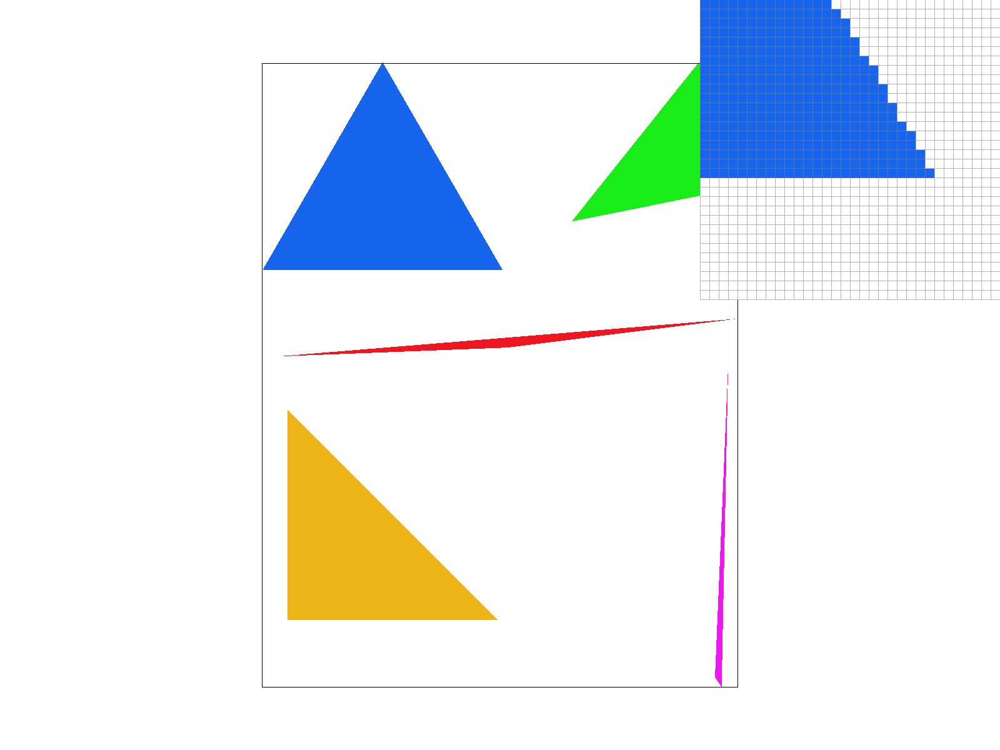
|
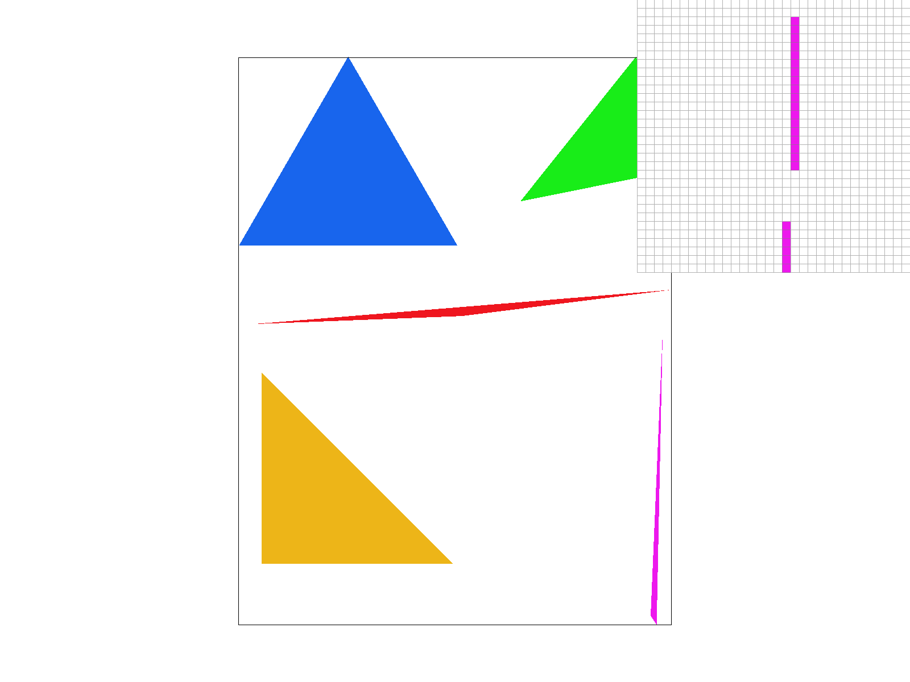
|
My algorithm is no worse than one that checks each sample within the bounding box because I only loop through the pixels within the bounding box, and not bother to process the rest of the pixels outside the area.
Part 2: Antialiasing triangles
For task 2, I used supersampling to antialias my triangles. Supersampling is dividing each pixel into sqrt(sample_rate) * sqrt(sample_rate) sub-pixels and sample at each sub-pixels. The improvement is that each pixel value is no longer just one color but the average of all sub-pixels’ colors. It useful because it smoothes the edges and prevents jaggies.
Sample_buffer (1d vector) is resized to to sample_rate times larger the original size because I need to store the color data for each sub-pixel. The fill_pixel method is modified, instead of filling each pixel, I fill each sub-pixel.
rasterize_triangle is also rewritten. Inside each pixel, I wrote a nested FOR LOOP to determine whether each sub-pixel is inside the given triangle. In the resolve_to_framebuffer step, I fill the target frame buffer pixels from the supersample buffer data by computing the average color value for all the sub-pixels within a pixel.
|
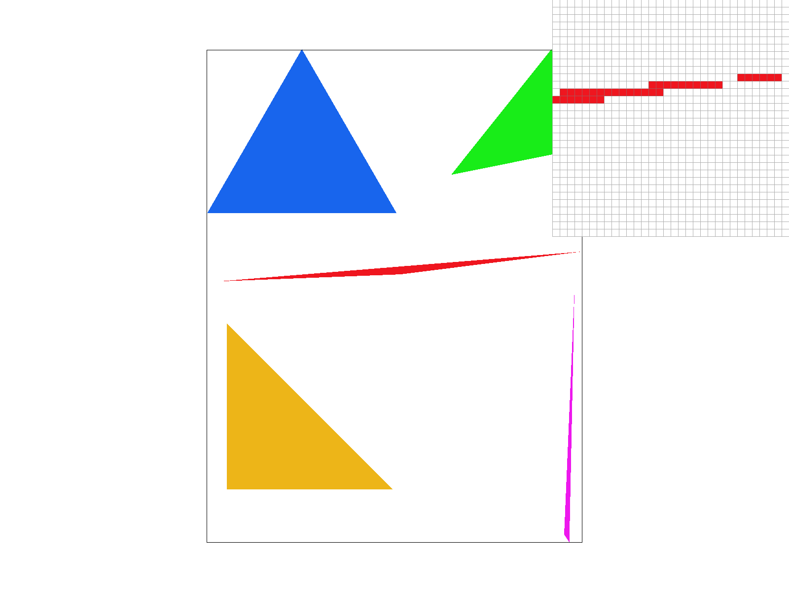
|
|
|
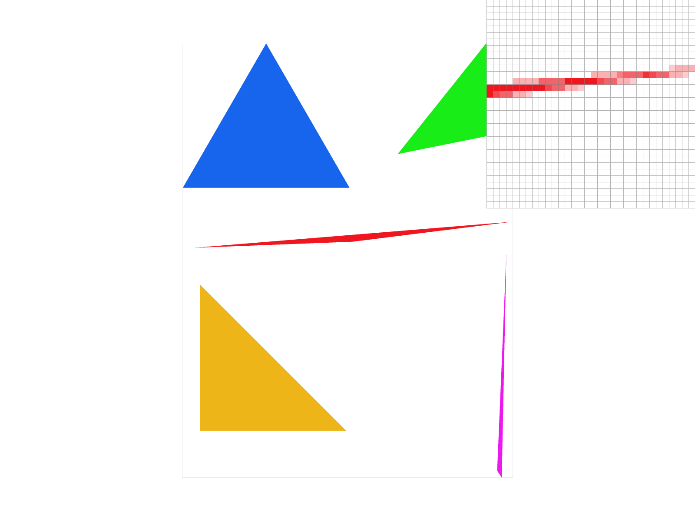
|
|
The results of task 2 is shown above. The edges are no longer shaped like staircases because the pixels where part of them is outside the shape will be given an intermediate color, which smoothes the visuals of the edges.
Part 3: Transforms
For task 3, we are allowed to redesign the gesture of the robot. In my version, I made cube-man looks like his is waving in the middle of a run.
|
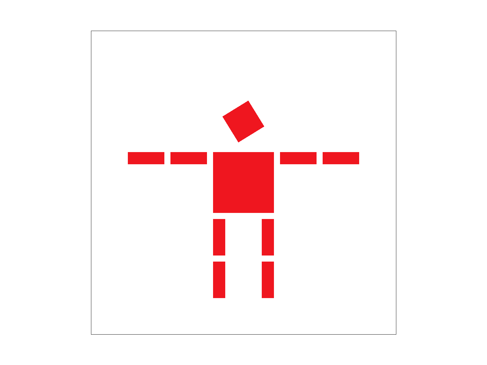
|

|
I added rotate() transform to every limb of the cube-man, and find the optimal angle to turn each cube, which is a body part, to my desired direction, before making tiny modifications in the translate transform to make it look natural.
After creating the running + waving cube-man, I recolored him to a blue color, but each limb a different shades of blue, so that the entire body, from left to right, has a gradient color light blue to dark blue
Section II: Sampling
Part 4: Barycentric coordinates
Barycentric coordinates is a coordinate system that is used to describe a point’s position within a triangle, with references of proximity to each vertices. It is in the form of (alpha, beta, gamma) with alpha + beta + gamma = 1. We can compute the rendering attributes of a point within a triangle by calculating the weighted average of those of each vertex.
To illustrate this with an example, I created an SVG file of a triangle whose vertices are positioned (100, 0), (0, 200), (200, 200) with color red, blue, green respectively. The smoothly blended color triangle constructed using barycentric coordinates is shown below.
Part 5: "Pixel sampling" for texture mapping
The method of Pixel sampling is that for each pixel in the screen space, we find a suitable corresponding pixel in the texture space, get the texture color and map its color data to the screen space. In regards to determining the texel coordinates for a screen pixel, barycentric coordinates system is helpful because it is preserved from screen space to texture space. For a point inside a triangle, I first calculate, in screen space, its barycentric coordinates in regards to the triangle vertices. Then the coordinates in the texture space can be determined by computing a weighted average of the corresponding triangle vertices’ coordinates. Now that we have determined texture space coordinates, which are float values, there are two methods to determine exactly which texel (texel indexes, which are integer values) we want to sample colors from.
|
|
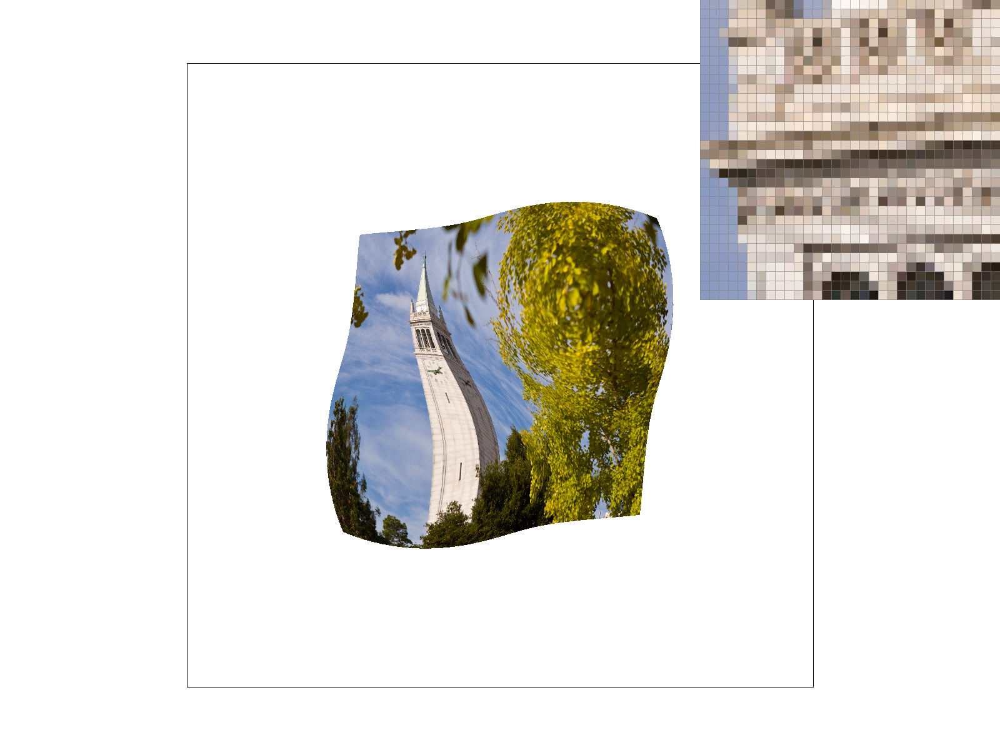
|
The method of nearest sampling is that for a point in the texture space, we choose to sample the texel whose center is the closest to our desired position.
The method of Bilinear sampling is that for a point in the texture space, we find its 2*2 neighbor texels, as shown below. First calculate the linearly interpolated colors in the horizontal direction for each row (based on the point’s horizontal position in regards to the coordinates of the center of the neighbor texels in the same row). Using the two interpolated colors from the previous step, I am able to compute, in the vertical direction, a linearly interpolated color of all four texture pixels.
|
|
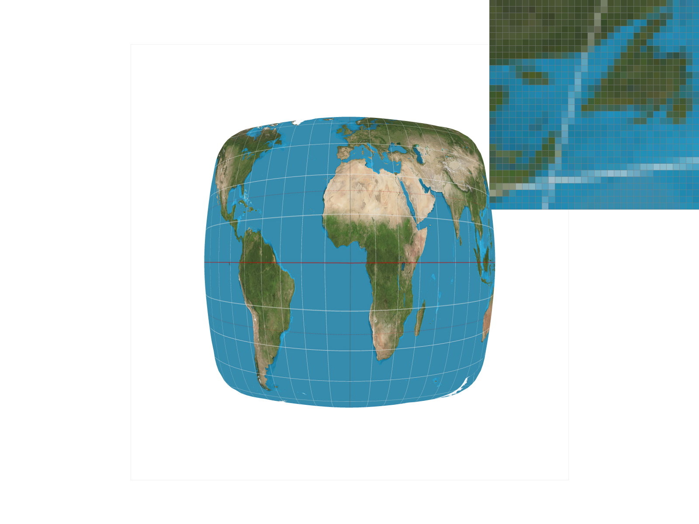
|
|
|
|
The results of bilinear sampling look more blurry than those of nearest sampling. Distinguishable visual effects tend to occur when there is a sharp edge. The reason is that nearest sampling method does not handle a sudden change of color very well because it forces a pixel to inherit the color of a nearest neighbor, whereas bilinear sampling method computes a nicely interpolated color for the pixel on the "edge" and creates a smooth transition of different colors.
Part 6: "Level sampling" with mipmaps for texture mapping
What is level sampling?
The scene we want to render might contain both objects that are far away and ones that are close to the screen. When we sample pixel colors from texture space to the screen space, we can use mipmaps for better texture mapping accuracy, so that objects at different distances are textured with texels from different “resolution”.
For level sampling, we keep downsampling the texture image and store all of the downsampled versions in a pyramid-like mipmap, with full-resolution image at level 0. For an object with small screen footprint, we sample from low resolution texture; for an object with large screen footprint, we sample from high resolution texture. This technique effectively reduces antialiasing for objects that are far away from the camera.
In my implementation, I first calculate the appropriate mipmap level for each screen pixel to sample from. In order to do that, I select two reference point (x+1, y) and (x, y+1) for point (x, y) and calculate their corresponding coordinates in the texture space using barycentric coordinates. Using the relative distances of the three points in texture space to screen space, I am able to calculate the appropriate level using the mathematics covered in class.
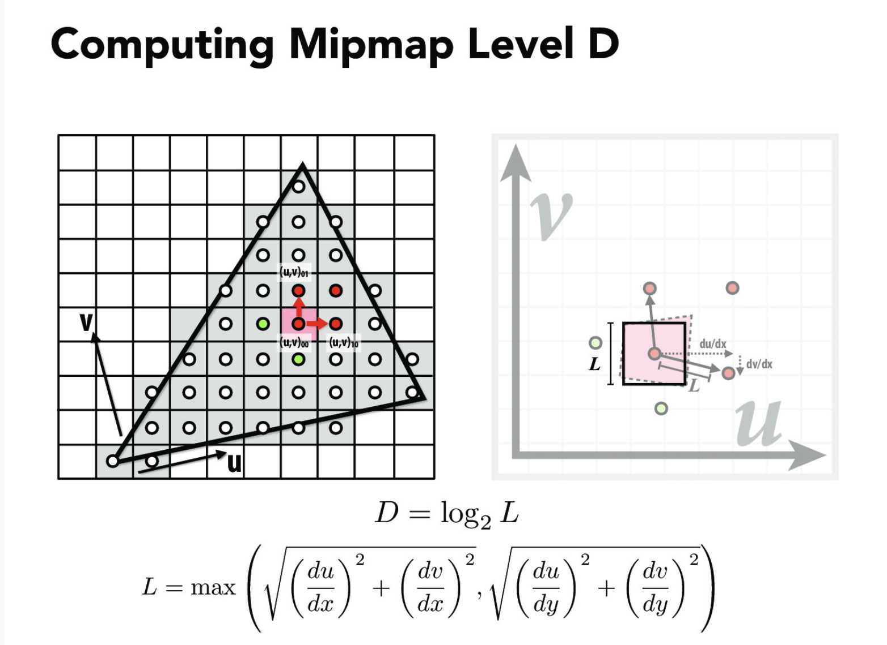The result of the computation for mipmap level is a floating point, therefore we need to apply specific method to determine from which level to sample. Nearest level sampling is choosing the level closest to our floating point result, whereas bilinear level sampling is choosing both the upper and lower levels and compute an interpolated value.
The below images illustrate the different results using different level sampling methods, on my self-selected image.
|
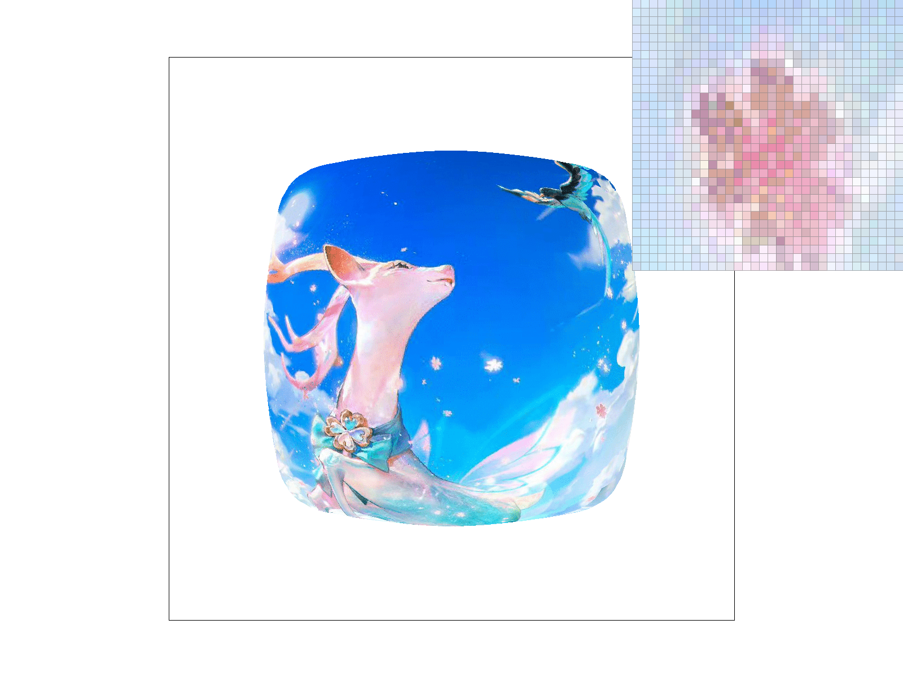
|
|
|
|
|
I have now implemented supersampling and different techniques of pixel sampling and level sampling.
Precomputing various texture resolution levels, linearly interpolating texel
values from neighboring pixels/mipmap levels, taking multiple samples per pixel
obviously takes extra runtime and storage in comparison to their alternatives.
Storage wise, nearest and bilinear level sampling consume extra memory usage because they
requires allocation of memory space for mipmaps, supersampling because it needs a larger sized sample buffer.
In terms of time performance, bilinear pixel and level sampling takes extra time to compute nicely interpolated
values, whereas supersampling performs calculations of weighted averages for what used to be a single straightforward value.
They are obviously slower in terms of speed because their computation is more complex.
However, these techniques do provide better rasterization results for their power
of reducing antialiasing and creating smoother images, because
they allow for a pixel to not just be an "absolute, rounded data" but rather an appropriately
interpolated value smoothly metamorphosed from neighbor pixels.